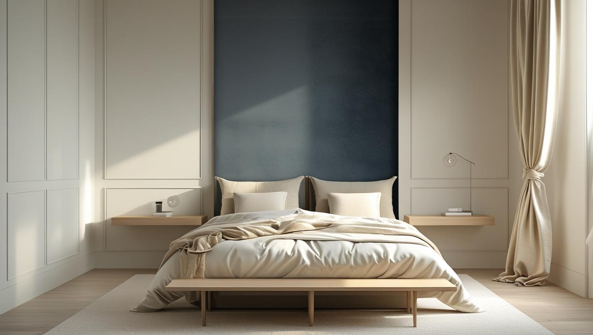
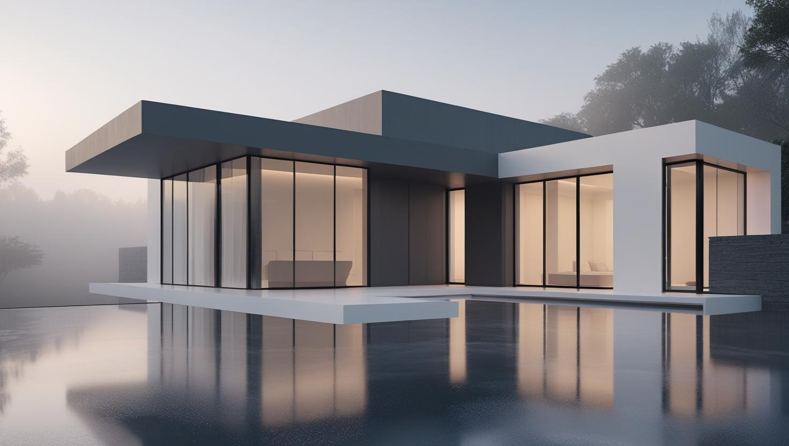
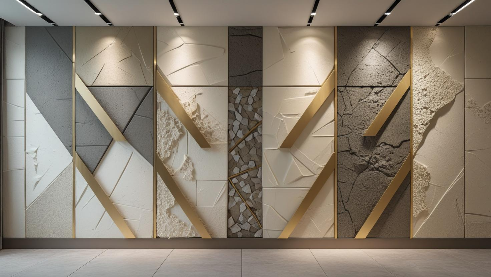

İstanbul Küçükçekmece Profesyonel Boya Ustası
Küçükçekmece'de eski apartman dairesi, site dairesi ya da dükkân boyatacaksanız 20 yıllık tecrübemizle yüzeye göre hazırlığı yapıp temiz teslim ediyoruz; keşif ücretsizdir.
Küçükçekmece'de Boya Badana: Yoğun Konut ve Göl Çevresi Nem
Küçükçekmece boyacı ve Küçükçekmece boyacı ustası talebinin ağırlığı yoğun apartman stoğunda. İlçede daire boyamanın yanında apartman ortak alanı ve dükkân işleri de düzenli talep ediliyor.
Göl çevresine ve alt katlara yakın konumdaki dairelerde nem kaynaklı leke ve kabarma daha sık görülüyor. Bu yüzeylerde işin sırası önemli: önce nemin kaynağı, sonra uygun astar, en son boya. Sırayı atlayan uygulamalar kısa sürede geri geliyor.
Yapı stoğunun bir bölümü orta yaşlı apartmanlardan oluştuğu için raspa ve tavan kenarı onarımı sık karşılaştığımız kalemler arasında.
Hizmetlerimiz

İç Mekan Boyama
Sefaköy ve Cennet çevresindeki eski dairelerde mutfak ve banyo duvarlarındaki yağlı boya katmanı, geçiş astarı olmadan plastik boyayla kaplanmaz. Halkalı ve Atakent'teki site dairelerinde ise hazırlık daha hafiftir; iş çoğunlukla renk yenileme ve ince tamirden oluşur.
- Eski dairede duvar ve tavan yenileme
- Yağlı boyadan plastik boyaya geçiş
- Kartonpiyer boyama
- Kalorifer peteği ve boru boyası

Dış Cephe Boyama
Yoğun apartman dokusunda dış cephe işi, bitişik binalar ve sınırlı kaldırım alanı nedeniyle erişim planıyla başlar. Göle yakın konumdaki binalarda nem gören cephelerin onarımı ve astar seçimi keşifte ayrıca değerlendirilir.
- Apartman dış cephe boyama
- Balkon altı ve alın boyası
- Sıva ve çatlak tamiri
- Nem gören cephe için astar

Dekoratif Boyama
Dükkân ve mağazalarda marka rengini taşıyan tek bir duvar, evlerde ise salonda dokulu bir yüzey dekoratif boyanın sade kullanımlarıdır. Dar ve uzun salonlarda açık tonlu bir doku, mekânı daha ferah gösterebilir.
- Mağaza marka rengi duvarı
- Salon için dokulu yüzey
- Mat, saten ve parlak seçimi
- Vitrin arkası vurgu duvarı
Fiyat Tablosu
| Hizmet Türü | Metrekare Fiyatı | Ortalama Süre (100m²) | Garanti |
|---|---|---|---|
| İç Cephe Boyama | 100-200 TL | 2-3 Gün | Uygulama kapsamına göre |
| Dış Cephe Boyama | 150-280 TL | 3-5 Gün | Uygulama kapsamına göre |
| Dekoratif Boyama | 250-500 TL | 4-7 Gün | Uygulama kapsamına göre |
| Ofis Boyama | 120-220 TL | 2-4 Gün | Uygulama kapsamına göre |
Metrekare fiyatları yaklaşık ön değerlendirme aralığıdır. Uygulanacak ölçüm yöntemi, boyanacak alanın kapsamı, yüzey durumu, tamirat ihtiyacı, kat sayısı ve malzeme seçimi keşif sırasında netleştirilir.
Dış cephe boya fiyatları uygulama alanı için yaklaşık 150–280 TL/m² aralığındadır. Kesin hesaplama yöntemi ve teklif; yüzey durumu, bina yüksekliği, erişim veya iskele ihtiyacı, tamirat kapsamı, boya sistemi ve uygulanacak kat sayısına göre keşif sırasında netleştirilir.
Uygulama kapsamına göre işçilik garantisi sağlanır. Garanti kapsamı ve istisnaları teklif veya iş sözleşmesinde belirtilir.
Bu rakamlar İstanbul Boyacılık'ın 2026 gösterge fiyat aralığıdır. Bir piyasa ortalaması değildir. Kesin fiyat; yüzey durumu, hazırlık ve tamirat miktarı, uygulanacak kat sayısı, seçilen malzeme sınıfı, ulaşım ve kat koşulları ile evin eşyalı mı boş mu olduğu keşifte görüldükten sonra belirlenir.
Küçükçekmece'de aralığı yukarı taşıyan ana kalem nem gören yüzeylerde çıkan onarım ve ek astar ihtiyacı ile eski yapıdaki raspa miktarı. Yüzeyi sağlam ve boş dairelerde iş aralığın altında kalabiliyor.
Sefaköy ve Cennet'teki Eski Dairelerde Yağlı Boyalı Duvarlar
Sefaköy ve Cennet çevresindeki eski apartman dairelerinde mutfak, banyo ve koridor duvarlarında yağlı boya katmanı bulunabilir; bu yüzeyler hazırlıksız plastik boyayla kaplanırsa yeni boya kısa sürede soyulur.
Parlak ve kaygan görünen bu yüzeylerde şu sıra izlenir:
- Yağ, is ve kirin deterjanlı suyla temizlenmesi
- Parlaklığı almak için yüzeyin zımparalanması
- Yağlı boya üzerine tutunan geçiş astarının sürülmesi
- Kuruduktan sonra silinebilir son kat boya
Bu hazırlık yapılmadan sürülen su bazlı boya ilk silmede ya da bir bant çekildiğinde kalkabilir. Bu yüzden eski dairelerde duvarın hangi boyayla kaplı olduğu keşifte küçük bir alanda test edilerek anlaşılır.
Kiralık Dairede Boya: Kiracı Değişiminde Neler Netleşmeli?
Küçükçekmece'nin yoğun apartman dokusunda kiralık daire boyası çoğu zaman eski kiracının çıkışı ile yenisinin girişi arasındaki kısa aralıkta yapılır; kimin ödeyeceği ve işin kapsamı bu yüzden önceden netleşmelidir.
Boya masrafının kiracıya mı ev sahibine mi ait olduğu kira sözleşmesine ve dairenin teslim alındığı duruma göre değişir; olağan kullanımdan doğan yıpranma ile hasar genellikle ayrı değerlendirilir. Anlaşmazlık yaşamamak için daireyi teslim alırken ve teslim ederken duvarların fotoğrafını çekmek işe yarar.
Keşiften önce şunları belirlemeniz teklifi hızlandırır:
- Boyanacak odalar ve tavanların dahil olup olmadığı
- Yeni kiracının taşınma tarihi
- Delik ve leke onarımının kapsamı
- Keşif ve uygulama günlerinde anahtarın kimde olacağı
Konuyu ayrıntılı anlatan kiralık ev boyamasında kiracı mı ev sahibi mi öder yazımızı okuyabilirsiniz.
Küçükçekmece'de Dükkân ve Mağaza Boyası İçin Çalışma Planı
Cadde üzerindeki dükkân ve mağazalarda boya işi, satışı sürdürebileceğiniz bir sırayla planlanır; bunun için keşifte açık olduğunuz saatlere ve raf düzenine bakılır.
- Ürün ve vitrin koruması: Raflar örtülür, vitrin camı ve tezgâhlar bantla korunur.
- Saat planı: Dükkân açıkken yapılamayacak bölümler için kapalı olunan saatler konuşulur.
- Koku ve kuruma: Müşterinin girdiği alanlarda su bazlı boya ve sürekli havalandırma tercih edilir.
- Tabela ve cephe: Tabela çevresi boyanırken kaldırım kullanılacaksa belediye izni gündeme gelebilir; üst katlara uzanan ortak cephede renk değişikliği apartman yönetiminin kararına bağlıdır.
Vitrin ve cephe tarafında renk ve malzeme seçimini anlatan mağaza cephe boyama rehberimizi inceleyebilirsiniz.
Apartman Bodrumu, Otopark ve Sığınak Duvarlarında Boya
Toprağa gömülü bodrum, otopark ve sığınak duvarları genellikle apartmanın en çok nem gören yüzeyleridir; buralarda sıradan iç cephe boyası yerine nem geçişine dayanıklı bir sistem gerekir.
Bu duvarlarda görülen beyaz tuz lekeleri (çiçeklenme), duvarın içinden su geçtiğini gösterir. Tuz fırçayla alınmadan yapılan boya ilk nemli mevsimde yeniden lekelenir.
- Tuzun ve tutunmayan sıvanın fırçalanıp temizlenmesi
- Nem geçişine dayanıklı astar ve nefes alan boya
- Otopark kolonlarındaki darbe izlerinin onarımı
- Loş alanlar için açık renk seçimi
Bodrum ve otopark apartmanın ortak alanı olduğundan boya kararı ve bütçesi genellikle yönetim ya da kat malikleri toplantısında belirlenir; keşfin yönetim temsilcisiyle birlikte yapılması kararı kolaylaştırır.
Küçükçekmece’de Hizmet Verdiğimiz Mahalleler
Küçükçekmece boya badana ustası olarak keşif yaptığımız mahallelerden bazıları aşağıdadır; eski apartman, site dairesi ya da dükkân fark etmeksizin adresinizi yazmanız yeterli:
Küçükçekmece Mahalleleri
- Küçükçekmece Atakent Mahallesi
- Küçükçekmece Atatürk Mahallesi
- Küçükçekmece Beşyol Mahallesi
- Küçükçekmece Cennet Mahallesi
- Küçükçekmece Cumhuriyet Mahallesi
- Küçükçekmece Fatih Mahallesi
- Küçükçekmece Fevzi Çakmak Mahallesi
- Küçükçekmece Gültepe Mahallesi
- Küçükçekmece Halkalı Merkez Mahallesi
- Küçükçekmece İnönü Mahallesi
- Küçükçekmece İstasyon Mahallesi
- Küçükçekmece Kanarya Mahallesi
- Küçükçekmece Kartaltepe Mahallesi
- Küçükçekmece Kemalpaşa Mahallesi
- Küçükçekmece Mehmet Akif Mahallesi
- Küçükçekmece Söğütlüçeşme Mahallesi
- Küçükçekmece Sultan Murat Mahallesi
- Küçükçekmece Tevfikbey Mahallesi
- Küçükçekmece Yarımburgaz Mahallesi
- Küçükçekmece Yeni Mahalle Mahallesi
- Küçükçekmece Yeşilova Mahallesi
Küçükçekmece Boyacılık Müşteri Yorumları
"Küçükçekmece iç cephe boyama hizmeti aldım. Titiz çalışmaları ve güler yüzlü hizmetleriyle memnun kaldım."
Ahmet Korkmaz
Cennet Mahallesi / Küçükçekmece
"Evimizi komple boyattık. İşçilikleri çok kaliteli, zamanında geldiler ve tertemiz teslim ettiler."
Selin Öztürk
Halkalı / Küçükçekmece
"Ofis boyama hizmeti aldık. Renk seçimi konusunda da yardımcı oldular. Profesyonel bir ekip."
Mehmet Demir
İnönü Mahallesi / Küçükçekmece
Faydalı Bağlantılar
Küçükçekmece boya badana planında fiyat hesabı, boya markası ve yakın ilçe seçeneklerini birlikte değerlendirmek için aşağıdaki rehberler kullanılabilir.
Küçükçekmece'de Boya Badana Yaptıranların Sık Sorduğu Sorular
Küçükçekmece boya badana ustası keşif için hangi bilgileri istiyor?
Adres ve kat bilgisi, binada asansör olup olmadığı, oda sayısı ya da yaklaşık metrekare, evin eşyalı mı boş mu olduğu ve nem ya da küf görülen duvarlar ilk görüşmede sorulur. Malzeme aracının yanaşabileceği bir yer olup olmadığını bilmek de taşıma planını kolaylaştırır; net teklif ücretsiz keşiften sonra yazılı olarak verilir.
Kapı, pervaz ve kalorifer peteği de boyanıyor mu?
Boyanıyor. Kapı ve pervazlar zımparalanıp astarlandıktan sonra yüzeye uygun boyayla kaplanır; petek ve borular için ısıya dayanıklı boya kullanılır ve uygulama kalorifer kapalıyken yapılır. Bu kalemler teklifte duvar boyasından ayrı yazılır.
Alt kattaki dairemde rutubet var, önce ne yapılmalı?
Önce kaynağı ayırt etmek gerekiyor: zeminden gelen rutubet, yalıtım eksikliği ya da tesisat kaçağı. Kaynak dururken uygulanan boya kısa sürede kabarıyor. Keşifte kaynağı değerlendirip boyadan önce çözülmesi gerekeni söylüyoruz.
Nemli havada boyanın kuruması ve kokusu neden uzuyor?
Hava nemli ve serin olduğunda boyanın içindeki su daha yavaş buharlaşır; katlar arasındaki bekleme ve kokunun dağılması bu yüzden uzar. Göle yakın ya da az güneş alan alt kat dairelerde uygulama sırasında ve sonrasında karşılıklı pencereleri açık tutmak kurumayı hızlandırır.
Apartman girişi ve merdiven boşluğu için teklif alabilir miyim?
Alabilirsiniz. Ortak alan tekliflerini kalem kalem veriyoruz: duvar yüzeyi, tavan, korkuluk ve doğrama ayrı ayrı yazılıyor. Böylece yönetim toplantısında karşılaştırılabiliyor.
Boya işi bittikten sonra temizlik yapılıyor mu?
Yapılıyor. Maskeleme ve örtüler kaldırılıyor, zemin temizleniyor ve iş birlikte kontrol ediliyor. Temiz teslim çalışma şeklimizin parçası, ayrı bir ücret kalemi değil.
İletişim
İletişim Bilgileri
Telefon: 0507 832 29 12
E-posta: boyaustamistanbul@gmail.com
10+ Uzman Ustamızla Küçükçekmece ve çevresine hizmet veriyoruz.
Çalışma Saatleri: Pzt-Cmt 00:00-23:59